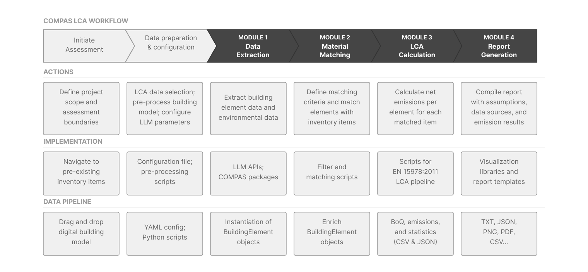

Tutorial
The compas_lca pipeline maps the LCA workflow of EN 15978:2011 onto four
processing modules: data extraction, material matching, LCA calculation, and
report generation.

High-level overview of the COMPAS LCA workflow.
All workflows are executed via the interactive menu:
python scripts/0_menu.py
Building model workflow
This workflow extracts and normalizes building model data for deterministic EPD matching, and generates a report per configured emissions indicator.
Drag and drop your IFC file into
data/building_model.Configure the relevant parameters in
config.yaml.Run
scripts/0_menu.py.Execute action points 01a to 01f sequentially.
The pipeline writes its intermediate and final artifacts into the configured project folder:
<project>/
01_processed/ normalized per-element IFC extraction + BoQ
02_representatives/ representative elements selected for LLM extraction
03_extracted/ LLM-extracted Matching Cores per element
04_enriched/ optional LLM enrichment (concrete strength, stud ratio)
05_matched/ element-to-EPD match results
06_report/ impacts, summaries, plots, and flag report
Note
The matching parameters (score threshold and top_k matches) can be
changed retroactively. Exit the menu, adjust the parameters in
config.yaml, relaunch the menu, and re-run action steps 01e and
01f. This requires no API usage. Create a backup of the initial files if
you want to compare results, as previous files will be overwritten.
Environmental data workflow
This workflow parses and integrates additional Environmental Product Declarations (EPDs) into the existing LCA database.
Review
oekobaudat_remaining.csv.Add UUIDs of selected elements to
epd_parser.yaml.Run
scripts/0_menu.py.Execute action points 02a to 02c sequentially.
Programmatic use
The same pipeline is available through the compas_lca.project.Project
class:
from compas_lca.project import Project
project = Project.from_config_yaml()
project.preprocess_ifc()
project.select_representatives()
project.extract_building_data()
project.enrich_building_data()
project.match_with_inventory()